Protein in electrolyte¶
Simulating a protein solvated in water and ions
{kind=link}
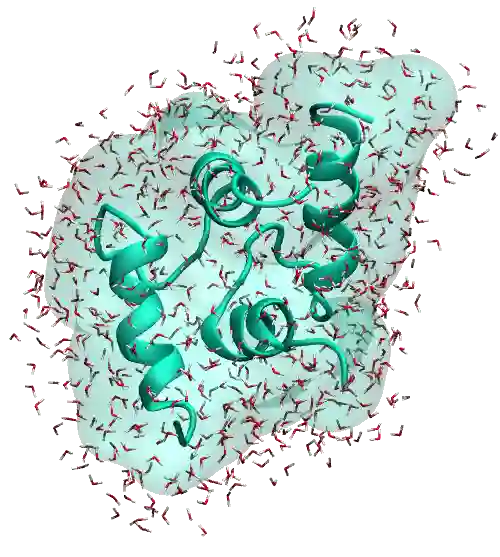
{kind=link}
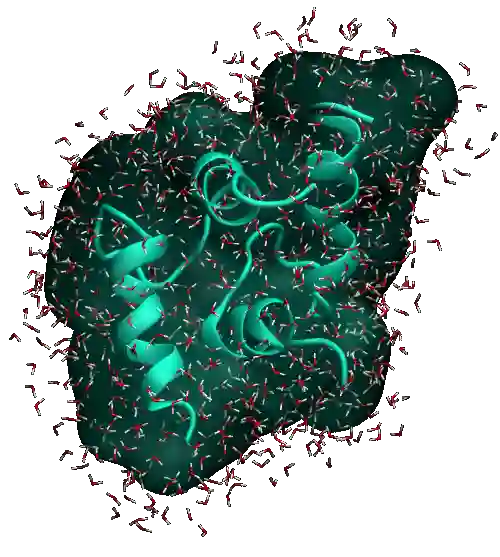
The goal of this tutorial is to use GROMACS to perform a simple molecular dynamics simulation of a protein solvated in an electrolyte. The protein is downloaded from the Protein Data Bank (PDB) [20] and is solvated in a solution composed of water molecules and sodium (\(\text{Na}^+\)) and chloride (\(\text{Cl}^-\)) ions.
This tutorial covers some of the basic functionalities of GROMACS, including system preparation, force field selection, input file preparation, and data analysis.
If you are completely new to GROMACS, I recommend that you follow this tutorial on a simple bulk-solution-label first.
Struggling with your molecular simulations project?
Get guidance for your GROMACS simulations. contact-label for personalized advice for your project.
This tutorial is compatible with the 2024.2 GROMACS version.
Convert the PDB file¶
Download the 1cta.pdb file, which was taken from the Protein Data Bank. The protein is a calcium-binding peptide from site III of chicken troponin-C, and its structure has been determined using \(^1\text{H-NMR}\) spectroscopy [21].
We first need to create a .gro file – i.e., a structure file in the
GROMACS format – from the .pdb file. This can be done using the
gmx trjconv command:
gmx trjconv -f 1cta.pdb -s 1cta.pdb -o 1cta.gro -center -box 5 5 5
Choose the group System for the centering, and the group System as well
for the output. A file named 1cta.gro is created. The generated .gro
file contains 666 atoms, with each atom corresponding to one line:
TROPONIN C SITE III - SITE III HOMODIMER
666
0ACE C 1 2.662 4.131 2.701
0ACE O 2 2.714 4.036 2.646
0ACE CH3 3 2.651 4.147 2.853
(...)
35NH2 HN2 664 2.417 3.671 3.192
69CA CA 665 3.016 2.279 1.785
70CA CA 666 1.859 2.046 1.838
5.00000 5.00000 5.00000
The last line is the box dimensions in nanometers, which was set by the
-box keyword in the gmx trjconv command using the -box 5 5 5 option.
All the options of
trjconvcan be found on the corresponding page of the GROMACS trjconv documentation.
Choose the force field¶
Note
Contrarily to the bulk-solution-label tutorial, where the parameters were entirely provided in the ff/ folder through multiple .itp files, we here rely on the force fields that are provided by GROMACS.
Let us select the force field that will control the interactions between the
different atoms. This can be done using the gmx pdb2gmx command:
gmx pdb2gmx -f 1cta.gro -water spce -v -ignh -o unsolvated.gro
Here, the -ignh option is used to ignore the hydrogen atoms that are
present in the coordinate file. The -water spce option is used to specify
the water model; the extended simple point charge model (SPC/E)
[22].
When running gmx pdb2gmx, choose the AMBER03 protein, nucleic AMBER94
force field [23]. A new .gro file named
unsolvated.gro is created alongside 1cta.gro, as well as a topology
file topol.top.
Solvate the protein¶
The protein is now ready to be solvated. Let us first immerse it in pure water
using gmx solvate:
gmx solvate -cs spc216.gro -cp unsolvated.gro -o solvated.gro -p topol.top
Here, spc216.gro is a pre-equilibrated water configuration provided by
GROMACS. After running the gmx solvate command, a number
\(N = 3719\) of water molecules, or SOL (for solvent), is added to the new
.gro file named solvated.gro, surrounding the protein. The number
\(N\) may slightly differ in your case.
A new line SOL 3719 must also appear at the end of the topol.top file:
(...)
[ molecules ]
; Compound #mols
Protein 1
SOL 3719
Run an energy minimization¶
Although gmx solvate creates molecules without overlap with the protein, it
is safer to perform a short energy minimization to ensure that the distances
between the atoms are reasonable. To do so, create a new folder named
inputs/ in the same repository as the current .gro and .top files,
and create a file named mininimize.mdp inside it. Copy the following lines
into mininimize.mdp:
integrator = steep
nsteps = 50
nstxout = 10
Here, the steepest-descent method is used, with a maximum number of steps
of 50 [13]. The trajectory
is printed every 10 steps, as specified by the nstxout option.
Also add the following lines into mininimize.mdp
cutoff-scheme = Verlet
nstlist = 10
ns_type = grid
couple-intramol = yes
These lines define how short-range interactions are handled. The
cutoff-scheme = Verlet option uses a buffered neighbor list that is
updated every 10 steps (nstlist = 10) using a grid-based search
(ns_type = grid). The couple-intramol = yes setting ensures that
interactions within molecules (e.g., bonded atoms) are treated with proper
exclusions or scaling.
Finally, add the the following lines into mininimize.mdp to control the interactions and cut-offs:
vdw-type = Cut-off
rvdw = 1.0
coulombtype = pme
fourierspacing = 0.1
pme-order = 4
rcoulomb = 1.0
Here, van der Waals interactions are truncated at 1.0 nm, while long-range electrostatics are computed using the Particle Mesh Ewald (PME) method, with a real-space cut-off of 1.0 nm. The grid spacing and interpolation order define the accuracy of the PME algorithm.
Prepare the energy minimization using gmx grompp:
gmx grompp -f inputs/mininimize.mdp -c solvated.gro -p topol.top -o min -pp min -po min -maxwarn 1
The -maxwarn 1 is required here, because the system is not charge neutral
and GROMACS will return a WARNING. The charge neutrality will be enforced
later on.
Finally, run the simulation using gmx mdrun:
gmx mdrun -v -deffnm min
Thanks to the steepest-descent algorithm, the potential energy of the system
decreases rapidly and becomes large and negative, which is usually a good sign.
The potential energy can be extracted using gmx energy:
gmx energy -f min.edr -o potential-energy-minimization.xvg
and choose Potential. The generated .xvg file contains the value of the
potential energy (in kJ/mol) as a function of the simulation steps. The potential
energy decreases from \(-3 \mathrm{e}{-4}~\text{kJ}/\text{mol}\) to
\(-1.8 \mathrm{e}{-5}~\text{kJ}/\text{mol}\).
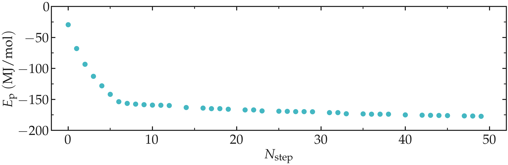
Figure: Potential energy \(E_\text{p}\) of the system as a function of the number of steps \(N_\text{step}\) during energy minimization.
Add the salt¶
Let us add some ions to the system so that the (1) total charge is 0, and (2)
that the salt concentration is \(c_\text{s} \approx 1~\text{mol/L}\).
This is done using the gmx genion command,
gmx genion -s min.tpr -p topol.top -conc 1 -neutral -o salted.gro
Select the group SOL as the continuous group of solvent molecules.
GROMACS will replace some of the water molecules (i.e., SOL residues) with ions.
As can be seen from the topol.top file, some sodium (Na+) and chloride (Cl-) ions were added, and the number \(N\) of water molecules is reduced compared to the previous step:
[ molecules ]
; Compound #mols
Protein 1
SOL 3563
NA 81
CL 75
Out of safety, let us run a new energy minimization starting from the salted.gro configuration.
gmx grompp -f inputs/mininimize.mdp -c salted.gro -p topol.top -o min-s -pp min-s -po min-s
gmx mdrun -v -deffnm min-s
Note that the -maxwarn option is not anymore necessary
as the system is charge-neutral.
As previously, one can have a look at the potential energy using the
gmx energy command:
gmx energy -f min-s.edr -o potential-energy-minimization-s.xvg
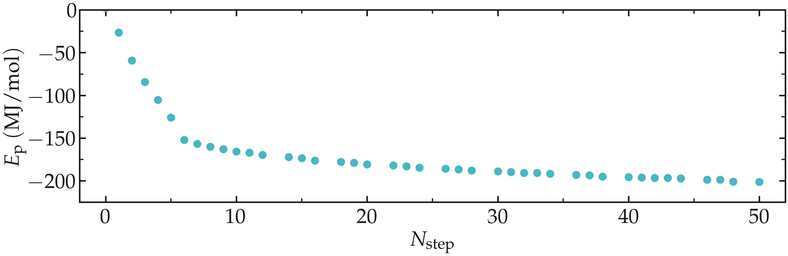
Figure: Potential energy, \(E_\text{p}\), of the system as a function of the number of steps, \(N_\text{step}\), during energy minimization.
The system can also be visualized using VMD using:
vmd min.gro min.trr
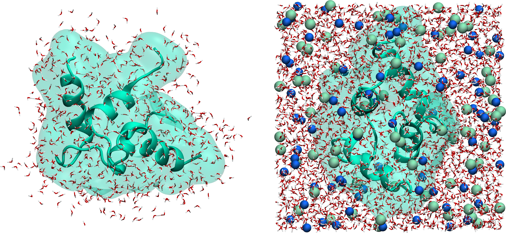
Figure: Protein solvated in water. On the left, only the water molecules that are near the protein are represented. On the right, the entire system is shown. Water molecules are represented as red and white sticks, and ions are represented as spheres.
Run the molecular dynamics¶
Create a new input file called nvt.mdp and place it into the inputs/ folder. Then, copy the following lines into it:
integrator = md
nsteps = 20000
dt = 0.001
comm_mode = linear
comm_grps = system
gen-vel = yes
gen-temp = 300
cutoff-scheme = Verlet
nstlist = 10
ns_type = grid
nstxout-compressed = 1000
vdw-type = Cut-off
rvdw = 1.0
couple-intramol = yes
coulombtype = pme
fourierspacing = 0.1
pme-order = 4
rcoulomb = 1.0
constraint-algorithm = lincs
constraints = hbonds
tcoupl = v-rescale
ld-seed = 48456
tc-grps = system
tau-t = 0.5
ref-t = 300
Here, the v-rescale thermostat is used to impose a temperature of
\(T = 300~\text{K}\) with a characteristic time of \(0.5~\text{ps}\).
The v-rescale thermostat corresponds to the Berendsen thermostat with an
additional stochastic term [18], and is
known to yield a proper canonical ensemble.
The LINCS algorithm is used to constrain the hydrogen bonds, allowing the use of a timestep of \(1~\text{fs}\). Without such constraints, the fast vibrations of the hydrogen bonds would require a smaller timestep, making the simulation significantly more computationally expensive.
Run the NVT simulation:
gmx grompp -f inputs/nvt.mdp -c min-s.gro -p topol.top -o nvt -pp nvt -po nvt
gmx mdrun -v -deffnm nvt
Let us observe the potential energy. We will also analyze the temperature and
the pressure of the system. Run the gmx energy command three times, and
select successively Potential, Temperature, and Pressure:
gmx energy -f nvt.edr -o potential-energy-nvt.xvg
gmx energy -f nvt.edr -o temperature-nvt.xvg
gmx energy -f nvt.edr -o pressure-nvt.xvg
After an initial spike, the energy, the temperature, and the pressure all stabilize. For the temperature, the desired value of \(T = 300~\text{K}\) is reached. As for the pressure, a negative value of about \(-700~\text{bar}\) can be observed.
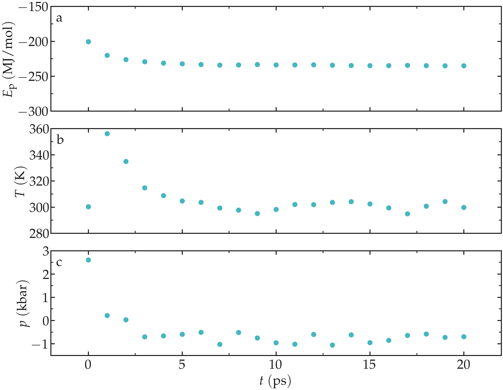
Figure: Potential energy \(E_\text{p}\) (a), temperature \(T\) (b), and pressure \(p\) (c) as a function of the time \(t\) during the NVT molecular dynamics.
The negative pressure indicates that the volume is slightly too large. This can be rectified by performing a short NpT simulation, during which the volume of the box will adjust until a desired pressure is reached. Create a new file called npt.mdp in the inputs/ folder. Copy the same lines as in nvt.mdp, and add the following lines to it:
pcoupl = c-rescale
Pcoupltype = isotropic
tau_p = 1.0
ref_p = 1.0
compressibility = 4.5e-5
Here, the isotropic c-rescale pressure coupling with a target pressure of
1 bar is used. Run it starting from the end of the previous NVT run:
gmx grompp -f inputs/npt.mdp -c nvt.gro -p topol.top -o npt -pp npt -po npt
gmx mdrun -v -deffnm npt
As the simulation progresses, the volume of the box decreases and better
adjusts to the fluid content of the box, as can be seen using the
gmx energy command and extracting the volume, and/or by extracting the
density:
gmx energy -f npt.edr -o volume-npt.xvg
gmx energy -f npt.edr -o density-npt.xvg
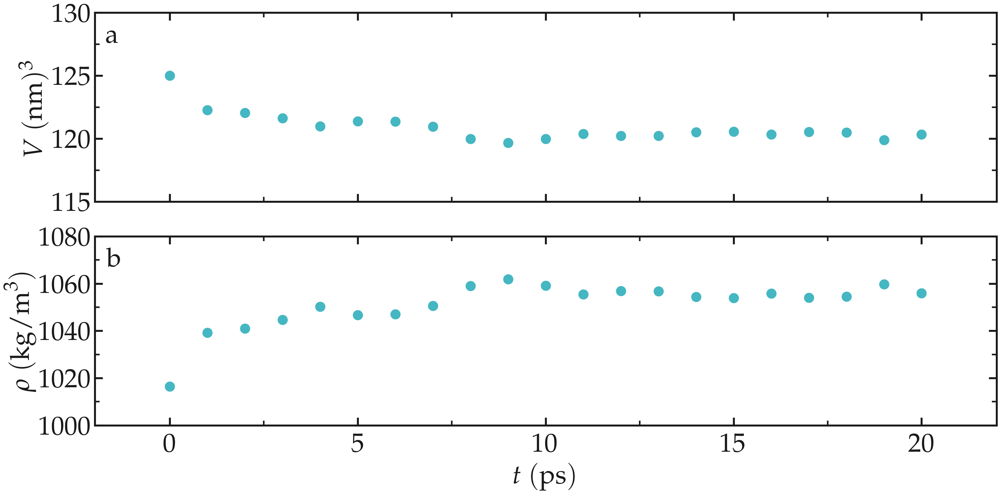
Figure: Box volume \(V\) (a) and density \(\rho\) (b) as a function of the time \(t\) during the NPT molecular dynamics.
You can access all the input scripts and data files that are used in these tutorials from GitHub.